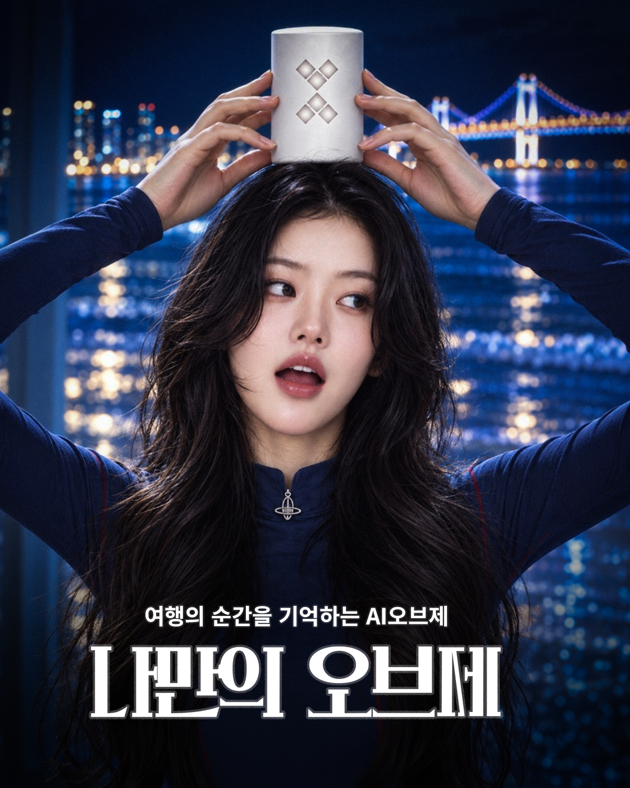

프로젝트 개요
부산 광안리해수욕장과 광안대교의 야경을 홍보하기 위해 기획한 관광 제품 광고 포스터입니다. 여행지의 이야기를 들려주고 순간을 기록하는 AI 오브제를 가상의 제품 콘셉트로 설정했습니다.
KEY VISUAL

PROJECT STORY · 2026
부산 광안리해수욕장과 광안대교의 야경을 홍보하기 위해 기획한 관광 제품 광고 포스터입니다. 여행지의 이야기를 들려주고 순간을 기록하는 AI 오브제를 가상의 제품 콘셉트로 설정했습니다.
광안대교의 야경을 단순히 보여 주는 데서 나아가, 여행자가 그 순간을 오래 간직하고 싶은 마음을 표현했습니다. 인물의 표정과 손에 든 제품을 중심으로 관광지의 풍경, 개인의 경험, 제품의 역할이 하나의 장면으로 이어지도록 구성했습니다.
감각적인 여행 경험과 기록을 중시하는 25–39세 개별 여행자를 타깃으로 설정했습니다. 광안리 야경을 부산에서 직접 경험하고 싶은 장면으로 제시해 관광지에 대한 관심을 높이는 것이 목적입니다.
얼굴 클로즈업과 양손으로 물체를 들어 올리는 구도를 바탕으로 제품을 화면 상단의 시각적 중심에 배치했습니다. 광안대교의 불빛은 배경에 부드럽게 남기고 딥 네이비, 코발트 블루, 미스트 블루로 부산의 밤을 표현했습니다.
흰색 매트 알루미늄과 연회색 LED 무늬를 사용해 푸른 야경과 선명한 대비를 만들었습니다. 제품의 밝은 표면이 인물의 시선과 손동작을 연결하는 중심 오브제로 보이도록 설계했습니다.
본 작업은 제품과 AI 기능을 제안하는 콘셉트 광고 프로젝트입니다.